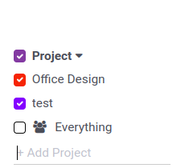
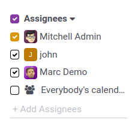
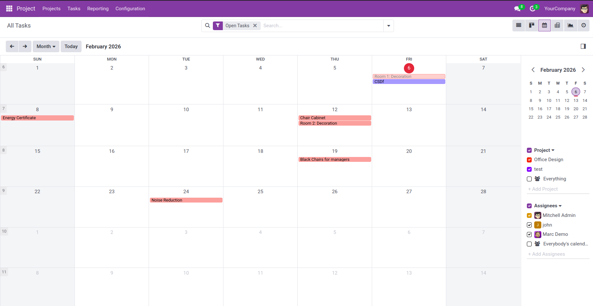

Calendar View Filter – Detailed Documentation
1. Overview
This document explains the filter implementation in the calendar view.
Filters are applied using Project and
Users fields to display relevant records.
Screenshots are attached for reference.
2. Filter Flow Diagram
User
|
v
Calendar View
|
+--> Project Filter (project_id - Many2one)
|
+--> Users Filter (user_ids - Many2many)
|
v
Filtered Calendar Records
The above diagram shows how the calendar view records are filtered
using both project and user filters.
3. Filter Details
3.1 Project Filter
- Field Name:
project_id
- Field Type: Many2one
- Purpose: Filters calendar records based on the selected project
- Behavior: Displays only records linked to the selected project
Screenshot Reference:

Screenshot showing calendar view filtered using Project (project_id).
3.2 Users Filter
- Field Name:
user_ids
- Field Type: Many2many
- Purpose: Filters records based on assigned users
- Behavior: Supports selecting multiple users
Screenshot Reference:

Screenshot showing calendar view filtered using Users (user_ids).
4. Steps to Apply Filters
1. Open the required module and switch to Calendar View.
2. Click on the Filters option.
3. Select a project from the Project filter.
4. Select one or more users from the Users filter.
5. Apply the filters to view the filtered calendar records.
5. Conclusion
Using project_id and user_ids filters in the
calendar view allows users to easily track and manage records related
to specific projects and assigned users.
